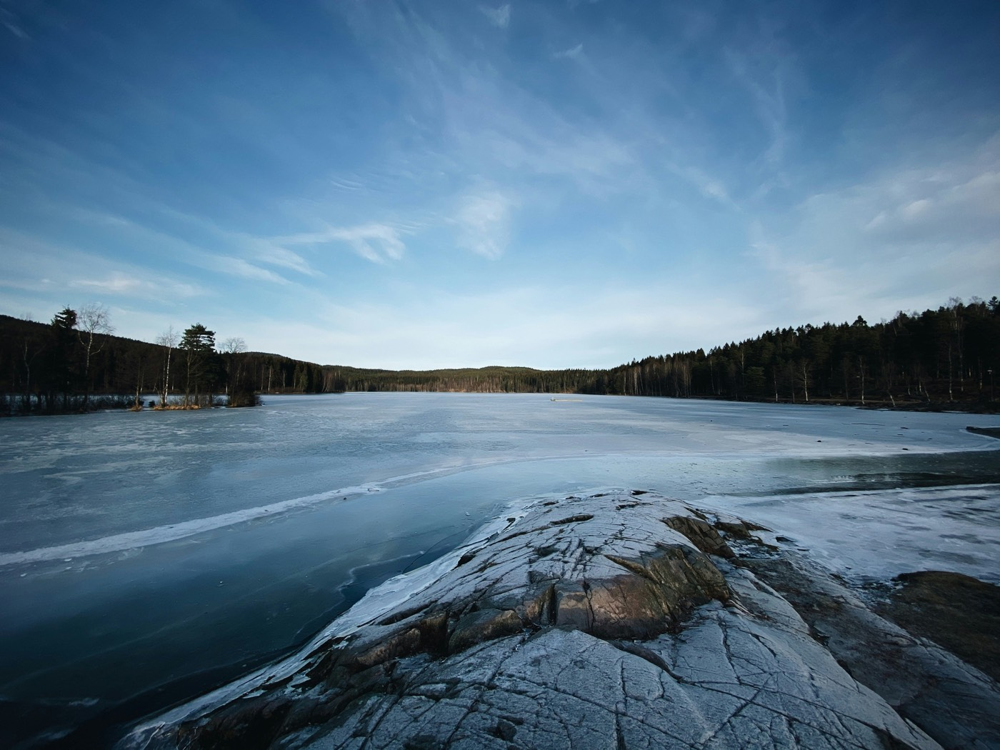
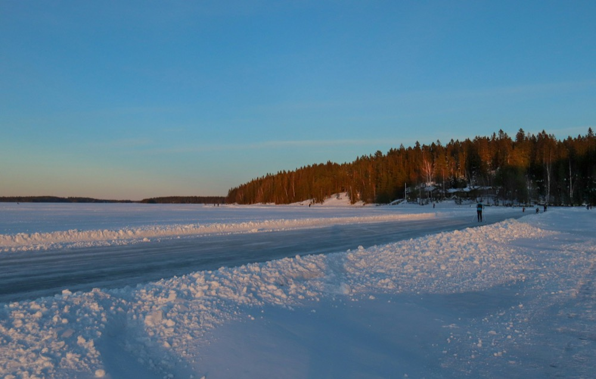

Missä luistelet
Suomen suurin järvialue, ja sinä päätät itse, milloin lähdet jäälle.
Punkaharju sijaitsee keskellä Saimaata, Kaakkois-Suomen laajaa järvialuetta. Metsää, saaria ja jäätä niin pitkälle kuin silmä kantaa.
Tämä matka eroaa Orsasta ja Falunista: mukana ei ole opasta. Saat majoituksen ja paikan, ja muuten suunnittelet päivät itse. Ei kiinteää lähtöpäivää, ei ryhmää, johon liittyä.
Se vaatii sinulta jotakin: sinun on itse osattava arvioida, onko jää turvallista. Jos epäilet tätä, opastettu matka Ruotsiin on parempi valinta.